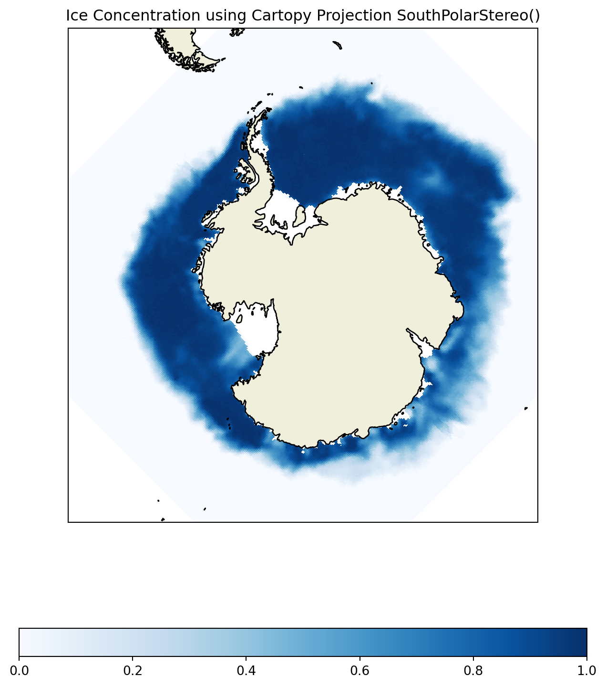
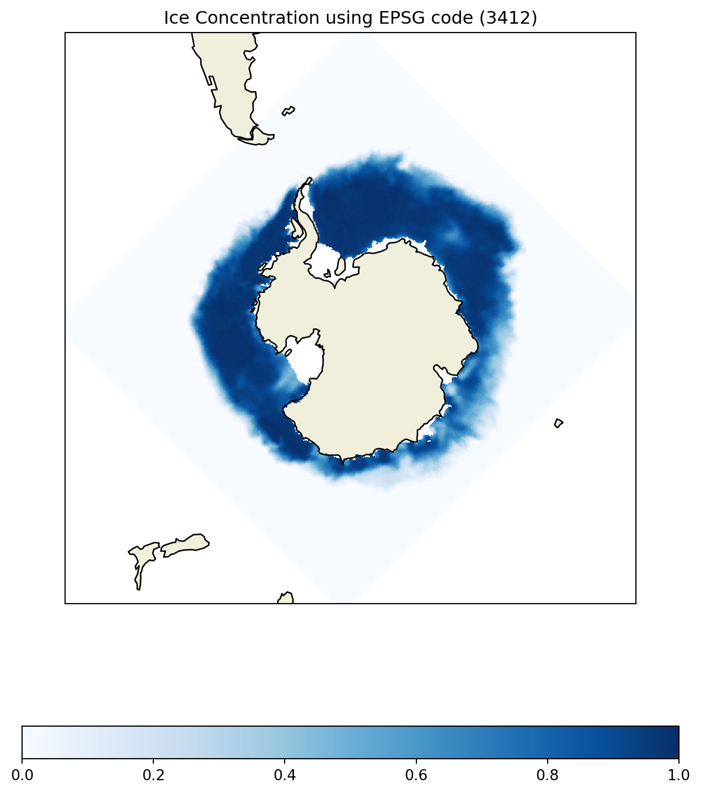
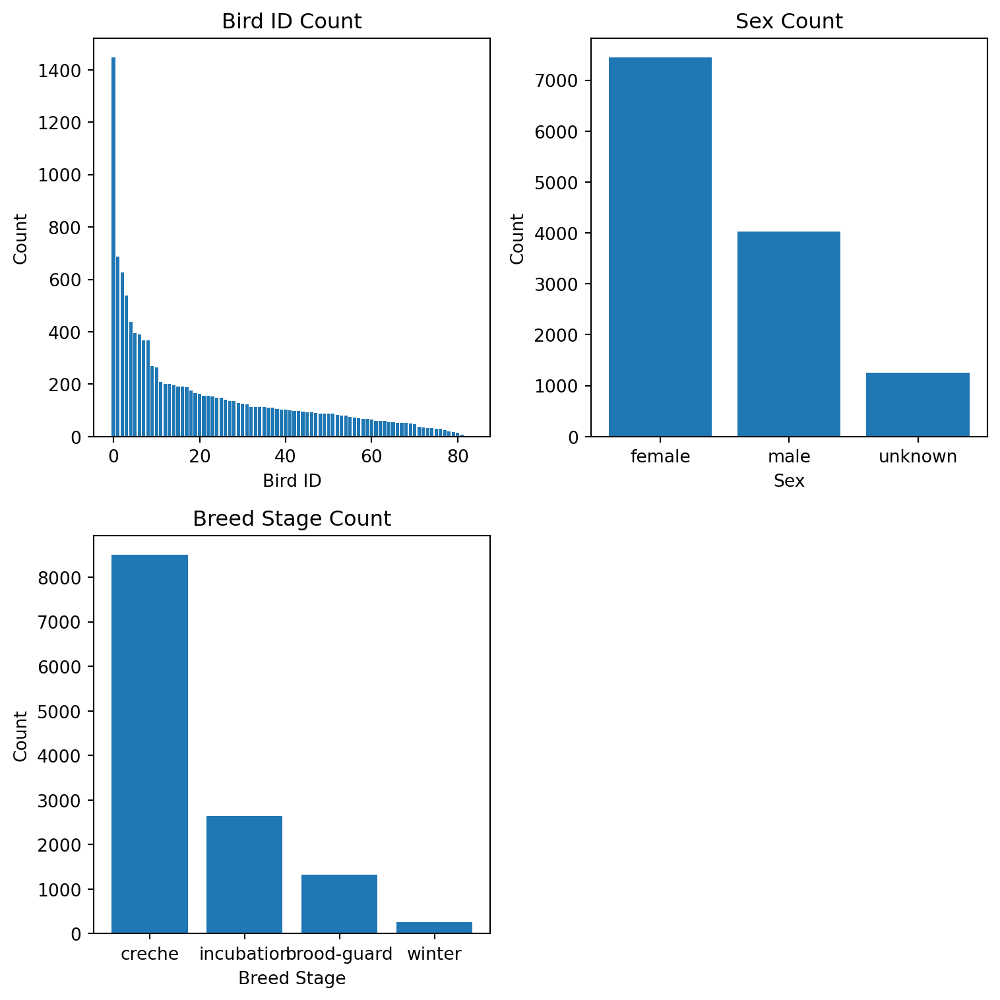
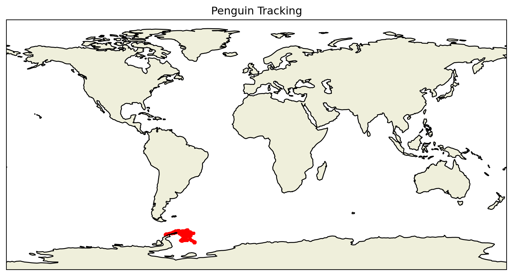
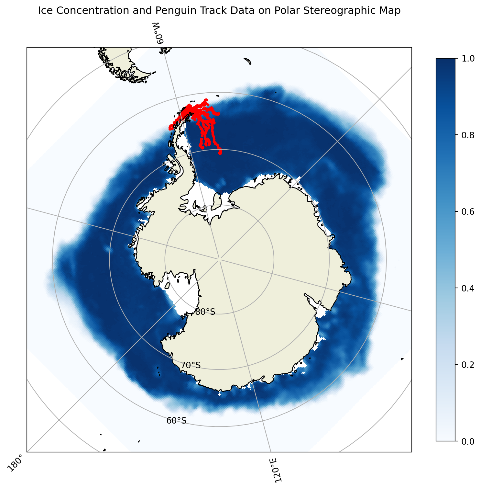
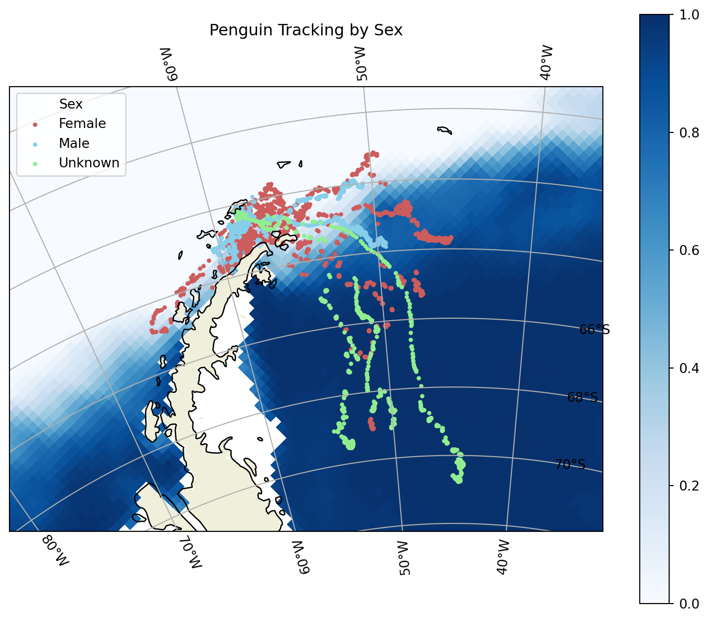
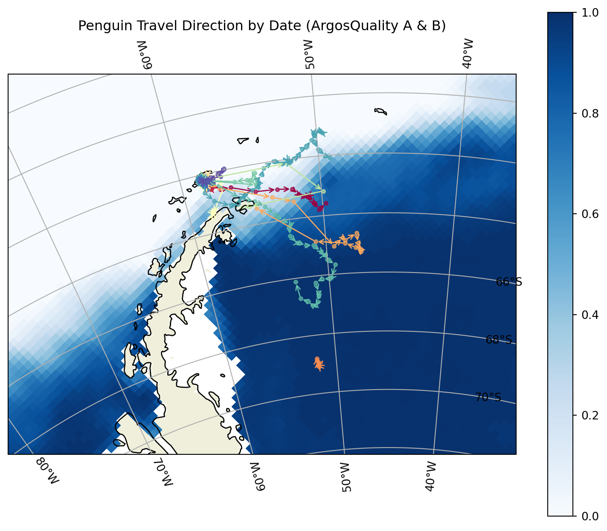
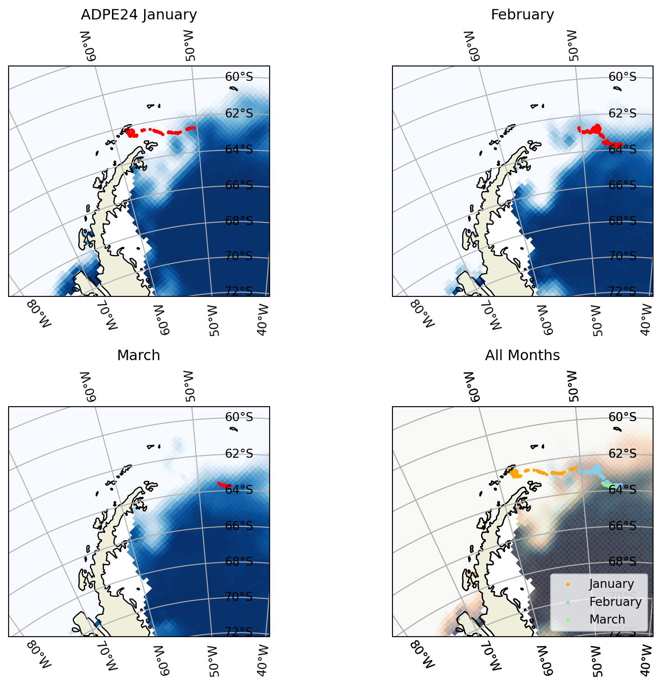

<class 'netCDF4._netCDF4.Dataset'>
root group (NETCDF3_CLASSIC data model, file format DAP2):
_NCProperties: version=2,netcdf=4.8.1,hdf5=1.10.6
acknowledgement: This project was supported in part by a grant from the NOAA Climate Data Record Program. Production of original NASA Team and Bootstrap algorithm estimates supported by the NASA Polar Distributed Active Archive Center. The sea ice concentration algorithms were developed by Donald J. Cavalieri, Josefino C. Comiso, Claire L. Parkinson, and others at the NASA Goddard Space Flight Center in Greenbelt, MD.
cdm_data_type: Grid
cdr_variable: cdr_seaice_conc_monthly
contributor_name: Walter N. Meier, Florence Fetterer, Ann Windnagel, J. Scott Stewart, Trey Stafford, Matt Fisher
contributor_role: principal investigator, author, author, software developer, software developer, software developer
Conventions: CF-1.6, ACDD-1.3, COARDS
creator_email: nsidc@nsidc.org
creator_name: NSIDC
creator_type: institution
creator_url: https://nsidc.org/
date_created: 2024-08-05T20:55:49Z
defaultGraphQuery: cdr_seaice_conc_monthly%5Blast%5D%5B(4337500.0):(-3937500.0)%5D%5B(-3937500.0):(3937500.0)%5D&.draw=surface
grid_mapping_false_easting: 0.0
grid_mapping_false_northing: 0.0
grid_mapping_GeoTransform: -3950000.0 25000.0 0 4350000.0 0 -25000.0
grid_mapping_grid_boundary_bottom_projected_y: -3950000.0
grid_mapping_grid_boundary_left_projected_x: -3950000.0
grid_mapping_grid_boundary_right_projected_x: 3950000.0
grid_mapping_grid_boundary_top_projected_y: 4350000.0
grid_mapping_latitude_of_projection_origin: -90.0
grid_mapping_longitude_of_projection_origin: 0.0
grid_mapping_name: polar_stereographic
grid_mapping_parent_grid_cell_column_subset_end: 316.0
grid_mapping_parent_grid_cell_column_subset_start: 0.0
grid_mapping_parent_grid_cell_row_subset_end: 332.0
grid_mapping_parent_grid_cell_row_subset_start: 0.0
grid_mapping_proj4text: +proj=stere +lat_0=-90 +lat_ts=-70 +lon_0=0 +k=1 +x_0=0 +y_0=0 +a=6378273 +b=6356889.449 +units=m +no_defs
grid_mapping_scaling_factor: 1.0
grid_mapping_semimajor_radius: 6378273.0
grid_mapping_semiminor_radius: 6356889.449
grid_mapping_spatial_ref: PROJCS["NSIDC Sea Ice Polar Stereographic South",GEOGCS["Unspecified datum based upon the Hughes 1980 ellipsoid",DATUM["Not_specified_based_on_Hughes_1980_ellipsoid",SPHEROID["Hughes 1980",6378273,298.279411123061,AUTHORITY["EPSG","7058"]],AUTHORITY["EPSG","6054"]],PRIMEM["Greenwich",0,AUTHORITY["EPSG","8901"]],UNIT["degree",0.01745329251994328,AUTHORITY["EPSG","9122"]],AUTHORITY["EPSG","4054"]],UNIT["metre",1,AUTHORITY["EPSG","9001"]],PROJECTION["Polar_Stereographic"],PARAMETER["latitude_of_origin",-70],PARAMETER["central_meridian",0],PARAMETER["scale_factor",1],PARAMETER["false_easting",0],PARAMETER["false_northing",0],AUTHORITY["EPSG","3412"],AXIS["X",UNKNOWN],AXIS["Y",UNKNOWN]]
grid_mapping_srid: urn:ogc:def:crs:EPSG::3412
grid_mapping_standard_parallel: -70.0
grid_mapping_straight_vertical_longitude_from_pole: 180.0
grid_mapping_units: meters
history: Tue Jan 5 13:40:25 2021: ncks -x -v goddard_merged_seaice_conc_monthly ./previous_blank_ncs/S_monthly_blank.nc ./S_monthly_blank.nc
2024-10-13T11:56:48Z (local files)
2024-10-13T11:56:48Z https://polarwatch.noaa.gov/erddap/griddap/nsidcG02202v4shmday.das
id: https://doi.org/10.7265/sr8p-kc62
infoUrl: https://nsidc.org/data/g02202/versions/4/
institution: NSIDC > National Snow and Ice Data Center
keywords: algorithm, area, bellingshausen, bootstrap, cdr_seaice_conc_monthly, center, climate, common, concentration, cryosphere, data, defense, deviation, distribution, dmsp, earth, Earth Science > Cryosphere > Sea Ice > Ice Extent, Earth Science > Cryosphere > Sea Ice > Sea Ice Concentration, Earth Science > Oceans > Sea Ice > Ice Extent, estimated, extent, flag, flags, flight, format, fraction, geographic, Geographic Region > Polar, Geographic Region > Southern Hemisphere, goddard, gsfc, hemisphere, ice, ice distribution, meteorological, microwave, month, monthly, nasa, national, network, noaa, noaa/nsidc, nsidc, nsidc_bt_seaice_conc_monthly, nsidc_nt_seaice_conc_monthly, ocean, Ocean > Southern Ocean, Ocean > Southern Ocean > Bellingshausen Sea, Ocean > Southern Ocean > Ross Sea, Ocean > Southern Ocean > Weddell Sea, oceans, passive, polar, processed, program, qa_of_cdr_seaice_conc_monthly, quality, record, region, ross, satellite, science, sea, sea_ice_area_fraction, sea_ice_area_fraction status_flag, snow, source, southern, space, standard, statistics, status, stdev_of_cdr_seaice_conc_monthly, tdim, team, version, weddell
keywords_vocabulary: GCMD Science Keywords
license: No constraints on data access or use
metadata_link: https://nsidc.org/data/g02202/versions/4/
naming_authority: org.doi.dx
NCO: "4.5.4"
platform: DMSP 5D-3/F17 > Defense Meteorological Satellite Program-F17
processing_level: NOAA Level 3
product_version: v04r00
program: NOAA Climate Data Record Program
proj_crs_code: EPSG:3412
proj_crs_code_description: The proj_crs_code attribute references a registered projection identifier (i.e. EPSG) when available. If the projection is not registered, non-standard then this attribute references a PolarWatch assigned internal identifier.
project: NOAA/NSIDC passive microwave sea ice concentration climate data record
references: Comiso, J. C., and F. Nishio. 2008. Trends in the Sea Ice Cover Using Enhanced and Compatible AMSR-E, SSM/I, and SMMR Data. Journal of Geophysical Research 113, C02S07, doi:10.1029/2007JC0043257. ; Comiso, J. C., D. Cavalieri, C. Parkinson, and P. Gloersen. 1997. Passive Microwave Algorithms for Sea Ice Concentrations: A Comparison of Two Techniques. Remote Sensing of the Environment 60(3):357-84. ; Comiso, J. C. 1984. Characteristics of Winter Sea Ice from Satellite Multispectral Microwave Observations. Journal of Geophysical Research 91(C1):975-94. ; Cavalieri, D. J., P. Gloersen, and W. J. Campbell. 1984. Determination of Sea Ice Parameters with the NIMBUS-7 SMMR. Journal of Geophysical Research 89(D4):5355-5369. ; Cavalieri, D. J., C. l. Parkinson, P. Gloersen, J. C. Comiso, and H. J. Zwally. 1999. Deriving Long-term Time Series of Sea Ice Cover from Satellite Passive-Microwave Multisensor Data Sets. Journal of Geophysical Research 104(7): 15,803-15,814. ; Comiso, J.C., R.A. Gersten, L.V. Stock, J. Turner, G.J. Perez, and K. Cho. 2017. Positive Trend in the Antarctic Sea Ice Cover and Associated Changes in Surface Temperature. J. Climate, 30, 2251?2267, https://doi.org/10.1175/JCLI-D-16-0408.1
sensor: SSMI/S > Special Sensor Microwave Imager/Sounder
software_version_id: git@bitbucket.org:nsidc/seaice_cdr.git@a11f275ee7ada7a9cdadada1b3d252de674d624f
source: ftp://sidads.colorado.edu/pub/DATASETS/NOAA/G02202_V4/south/daily/2024/seaice_conc_daily_sh_20240301_f17_v04r00.nc, ftp://sidads.colorado.edu/pub/DATASETS/NOAA/G02202_V4/south/daily/2024/seaice_conc_daily_sh_20240302_f17_v04r00.nc, ftp://sidads.colorado.edu/pub/DATASETS/NOAA/G02202_V4/south/daily/2024/seaice_conc_daily_sh_20240303_f17_v04r00.nc, ftp://sidads.colorado.edu/pub/DATASETS/NOAA/G02202_V4/south/daily/2024/seaice_conc_daily_sh_20240304_f17_v04r00.nc, ftp://sidads.colorado.edu/pub/DATASETS/NOAA/G02202_V4/south/daily/2024/seaice_conc_daily_sh_20240305_f17_v04r00.nc, ftp://sidads.colorado.edu/pub/DATASETS/NOAA/G02202_V4/south/daily/2024/seaice_conc_daily_sh_20240306_f17_v04r00.nc, ftp://sidads.colorado.edu/pub/DATASETS/NOAA/G02202_V4/south/daily/2024/seaice_conc_daily_sh_20240307_f17_v04r00.nc, ftp://sidads.colorado.edu/pub/DATASETS/NOAA/G02202_V4/south/daily/2024/seaice_conc_daily_sh_20240308_f17_v04r00.nc, ftp://sidads.colorado.edu/pub/DATASETS/NOAA/G02202_V4/south/daily/2024/seaice_conc_daily_sh_20240309_f17_v04r00.nc, ftp://sidads.colorado.edu/pub/DATASETS/NOAA/G02202_V4/south/daily/2024/seaice_conc_daily_sh_20240310_f17_v04r00.nc, ftp://sidads.colorado.edu/pub/DATASETS/NOAA/G02202_V4/south/daily/2024/seaice_conc_daily_sh_20240311_f17_v04r00.nc, ftp://sidads.colorado.edu/pub/DATASETS/NOAA/G02202_V4/south/daily/2024/seaice_conc_daily_sh_20240312_f17_v04r00.nc, ftp://sidads.colorado.edu/pub/DATASETS/NOAA/G02202_V4/south/daily/2024/seaice_conc_daily_sh_20240313_f17_v04r00.nc, ftp://sidads.colorado.edu/pub/DATASETS/NOAA/G02202_V4/south/daily/2024/seaice_conc_daily_sh_20240314_f17_v04r00.nc, ftp://sidads.colorado.edu/pub/DATASETS/NOAA/G02202_V4/south/daily/2024/seaice_conc_daily_sh_20240315_f17_v04r00.nc, ftp://sidads.colorado.edu/pub/DATASETS/NOAA/G02202_V4/south/daily/2024/seaice_conc_daily_sh_20240316_f17_v04r00.nc, ftp://sidads.colorado.edu/pub/DATASETS/NOAA/G02202_V4/south/daily/2024/seaice_conc_daily_sh_20240317_f17_v04r00.nc, ftp://sidads.colorado.edu/pub/DATASETS/NOAA/G02202_V4/south/daily/2024/seaice_conc_daily_sh_20240318_f17_v04r00.nc, ftp://sidads.colorado.edu/pub/DATASETS/NOAA/G02202_V4/south/daily/2024/seaice_conc_daily_sh_20240319_f17_v04r00.nc, ftp://sidads.colorado.edu/pub/DATASETS/NOAA/G02202_V4/south/daily/2024/seaice_conc_daily_sh_20240320_f17_v04r00.nc, ftp://sidads.colorado.edu/pub/DATASETS/NOAA/G02202_V4/south/daily/2024/seaice_conc_daily_sh_20240321_f17_v04r00.nc, ftp://sidads.colorado.edu/pub/DATASETS/NOAA/G02202_V4/south/daily/2024/seaice_conc_daily_sh_20240322_f17_v04r00.nc, ftp://sidads.colorado.edu/pub/DATASETS/NOAA/G02202_V4/south/daily/2024/seaice_conc_daily_sh_20240323_f17_v04r00.nc, ftp://sidads.colorado.edu/pub/DATASETS/NOAA/G02202_V4/south/daily/2024/seaice_conc_daily_sh_20240324_f17_v04r00.nc, ftp://sidads.colorado.edu/pub/DATASETS/NOAA/G02202_V4/south/daily/2024/seaice_conc_daily_sh_20240325_f17_v04r00.nc, ftp://sidads.colorado.edu/pub/DATASETS/NOAA/G02202_V4/south/daily/2024/seaice_conc_daily_sh_20240326_f17_v04r00.nc, ftp://sidads.colorado.edu/pub/DATASETS/NOAA/G02202_V4/south/daily/2024/seaice_conc_daily_sh_20240327_f17_v04r00.nc, ftp://sidads.colorado.edu/pub/DATASETS/NOAA/G02202_V4/south/daily/2024/seaice_conc_daily_sh_20240328_f17_v04r00.nc, ftp://sidads.colorado.edu/pub/DATASETS/NOAA/G02202_V4/south/daily/2024/seaice_conc_daily_sh_20240329_f17_v04r00.nc, ftp://sidads.colorado.edu/pub/DATASETS/NOAA/G02202_V4/south/daily/2024/seaice_conc_daily_sh_20240330_f17_v04r00.nc, ftp://sidads.colorado.edu/pub/DATASETS/NOAA/G02202_V4/south/daily/2024/seaice_conc_daily_sh_20240331_f17_v04r00.nc
sourceUrl: (local files)
spatial_resolution: 25km
standard_name_vocabulary: CF Standard Name Table v70
summary: This data set provides a passive microwave sea ice concentration climate data record (CDR) based on gridded brightness temperatures (TBs) from the Defense Meteorological Satellite Program (DMSP) series of passive microwave radiometers: the Nimbus-7 Scanning Multichannel Microwave Radiometer (SMMR), the Special Sensor Microwave Imager (SSM/I) and the Special Sensor Microwave Imager/Sounder (SSMIS). The sea ice concentration CDR is an estimate of sea ice concentration that is produced by combining concentration estimates from two algorithms developed at the NASA Goddard Space Flight Center (GSFC): the NASA Team algorithm and the Bootstrap algorithm. The individual algorithms are used to process and combine brightness temperature data at National Snow and Ice Data Center (NSIDC). This product is designed to provide a consistent time series of sea ice concentrations (the fraction, or percentage, of ocean area covered by sea ice) from November 1978 to the present which spans the coverage of several passive microwave instruments. The data are gridded on the NSIDC polar stereographic grid with 25 x 25 km grid cells, and are available in Network Common Data Format (NetCDF) file format. Each file contains a variable with the CDR concentration values as well as variables that hold the NASA Team and Bootstrap concentrations for reference. Variables containing standard deviation, quality flags, and projection information are also included. Data are available from NSIDC via FTP see https://nsidc.org/data/G02202/versions/4/. Data are also distributed via the PolarWatch ERDDAP at https://polarwatch.noaa.gov/erddap. Note that the data format available through PolarWatch is different from the NSIDC FTP NetCDF files. The PolarWatch data server stores projection information as global attributes (with the prefix grid_mapping) instead of as a variable; and the timestamp is served in different units (seconds since 1970).
time_coverage_duration: P1M
time_coverage_end: 2024-03-01T00:00:00Z
time_coverage_resolution: P1M
time_coverage_start: 1978-11-01T00:00:00Z
title: Sea Ice Concentration, NOAA/NSIDC Climate Data Record V4, Southern Hemisphere, 25km, Science Quality, 1978-Present, Monthly
dimensions(sizes): time(545), xgrid(316), ygrid(332)
variables(dimensions): float64 time(time), float32 ygrid(ygrid), float32 xgrid(xgrid), float32 cdr_seaice_conc_monthly(time, ygrid, xgrid), float32 nsidc_bt_seaice_conc_monthly(time, ygrid, xgrid), float32 nsidc_nt_seaice_conc_monthly(time, ygrid, xgrid), int8 qa_of_cdr_seaice_conc_monthly(time, ygrid, xgrid), float32 stdev_of_cdr_seaice_conc_monthly(time, ygrid, xgrid)
groups: Sea Ice Concentration and Penguin Telemetry
Geospatial Data Analysis
Statistics
This is the part of tutorial that introduces the use of geospatial data.
Sea Ice Concentration Data
Note: Monthly Sea Ice Concentration Data from October 1996 to April 2013.
Link: https://polarwatch.noaa.gov/erddap/griddap/nsidcG02202v4shmday.html
# Check Time
time = da.variables['time']
seaice_concen = da.variables['cdr_seaice_conc_monthly'][:]
# Covent time format
time_val = nc.num2date(time[:], units=time.units, calendar=time.calendar)
sample_time = cftime.DatetimeGregorian(1996, 10, 1) # Desired time
time_ind = np.where(time_val == sample_time)[0] # Find matching indices
sample_sea_ice = seaice_concen[time_ind, :, :][0]South Polar Projections
SouthPolarStereo()
Text(0.5, 1.0, 'Ice Concentration using Cartopy Projection SouthPolarStereo()')
EPSG Code 3412

Adelie Penguin Telemetry Data
| BirdId | Sex | Age | Breed Stage | DateGMT | TimeGMT | Latitude | Longitude | ArgosQuality | |
|---|---|---|---|---|---|---|---|---|---|
| 0 | ADPE1 | female | adult | incubation | 28/10/1997 | 7:54:00 | -62.171667 | -58.445000 | 2 |
| 1 | ADPE1 | female | adult | incubation | 28/10/1997 | 9:32:00 | -62.173333 | -58.463333 | 2 |
| 2 | ADPE1 | female | adult | incubation | 28/10/1997 | 18:15:00 | -62.158333 | -58.426667 | 1 |
| 3 | ADPE1 | female | adult | incubation | 28/10/1997 | 19:57:00 | -62.175000 | -58.441667 | 2 |
| 4 | ADPE1 | female | adult | incubation | 28/10/1997 | 21:37:00 | -62.171667 | -58.445000 | 2 |
array(['1996-10', '1996-11', '1997-10', '1997-11', '1997-12', '2002-01',
'2002-02', '2002-03', '2003-01', '2003-02', '2003-03', '2004-01',
'2004-02', '2004-03', '2004-04', '2004-05', '2004-06', '2004-07',
'2004-08', '2004-12', '2005-01', '2005-02', '2006-01', '2007-01',
'2009-02', '2009-03', '2010-01', '2010-10', '2010-11', '2011-12',
'2012-01', '2012-02', '2012-12', '2013-01', '2013-02'],
dtype=object)Distribution of Penguins

Location of Penguins on the Projected Map


Penguin Movements


Monthly Tracking with Sea Ice Concentration
Bird ID ADPE24 (Female)
['2003-01' '2003-02' '2003-03']